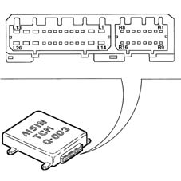
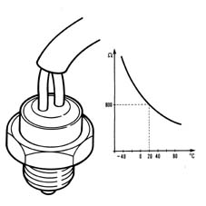
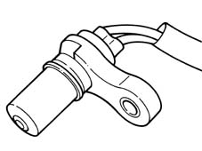

2135B automatic transmission electrical controls
- Path
- Descriptions > 21 GEARBOX > 2135 AUTOMATIC TRANSMISSION EXTERNAL CONTROLS > 2135B automatic transmission electrical controls
- Kind
- system description
- Applies to
- engines: 2.5 V6; all production periods
- Interactive page
- https://sloeber94.github.io/elrnDB-a156/en/#/3232909
Applies to: engines: 2.5 V6; all production periods; only with equipment: Automatic transmission
CONTROL UNIT
This is fitted in the passenger compartment in the central area of the facia beneath the climate control unit.
Pin out

L1, Transmission fluid pressure control solenoid STH (-) L2, Earth L3, Selector lever position switch (P) L4, Not connected L5, Transmission fluid temperature sensor (-) L6, Door switch L7, Selector lever position switch (P) (for key-lock and shift-lock functions) L8, Earth L9, Brake pedal switch L10, Control panel display signal L11, Pressure control solenoid L12, Battery positive L13, Solenoid for engaging speed S1 L14, Manual gearlever position switch MP5 L15, Solenoid SB L16, Selector lever position switch (R) L17, Not connected L18, Transmission fluid temperature sensor (+) L19, Transmission fluid cooling fan L20, Key lock solenoid L21, Shift lock solenoid L22, Not connected L23, Tester line K L24, Lock-up clutch solenoid SL L25, Ignition-operated positive (+15) L26, Gear engagement solenoid (S2) R1, CAN line (high) IE R2, mainshaft and layshaft rpm sensor screen R3, mainshaft rpm sensor (-) R4, layshaft rpm sensor (-) R5, SPORT/CITY button R6, Not connected R7, Selector lever position switch (N) R8, Manual gearbox lever position switch MP1 R9, CAN line (low) IE R10, Manual gearbox lever position switch MP3 R11, Mainshaft rpm sensor (+) R12, layshaft rpm sensor (+) R13, Manual gearbox lever position switch MP4 R14, ICE button R15, Manual gearbox lever position switch MP2 R16, Selector lever position switch (D)
GEARBOX OIL TEMPERATURE SENSOR
This is located in the gear casing and measures temperature by means of voltage changes induced in the sensitive part of the sensor.
Information supplied by the CAE control unit is used to increase line pressure when cold in order to reduce shift times.

Mainshaft rpm sensor
This magnetic induction sensor is located on the gear casing. It measures mainshaft rpm via a 12-toothed phonic wheel on the outer surface of clutch cylinder C1.
The sensor sends control unit CAE a pulse signal (12 pulses per mainshaft revolution) proportional to gearbox input rpm.

LAYSHAFT rpm sensor
This magnetic induction sensor is located on the gear casing. It measures layshaft rpm via an 18-toothed phonic wheel formed from the parking lock gear.
The sensor sends the CAE control unit a pulse signal (18 pulses per layshaft revolution) proportional to gearbox output rpm, i.e. vehicle speed.
This signal is used to implement gear shifts.